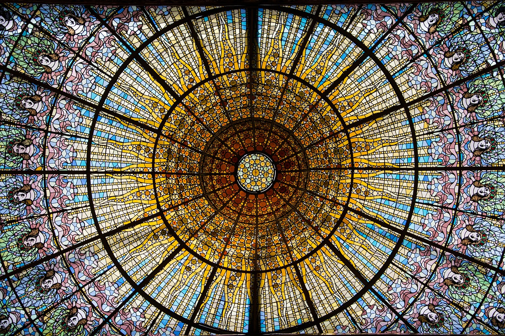
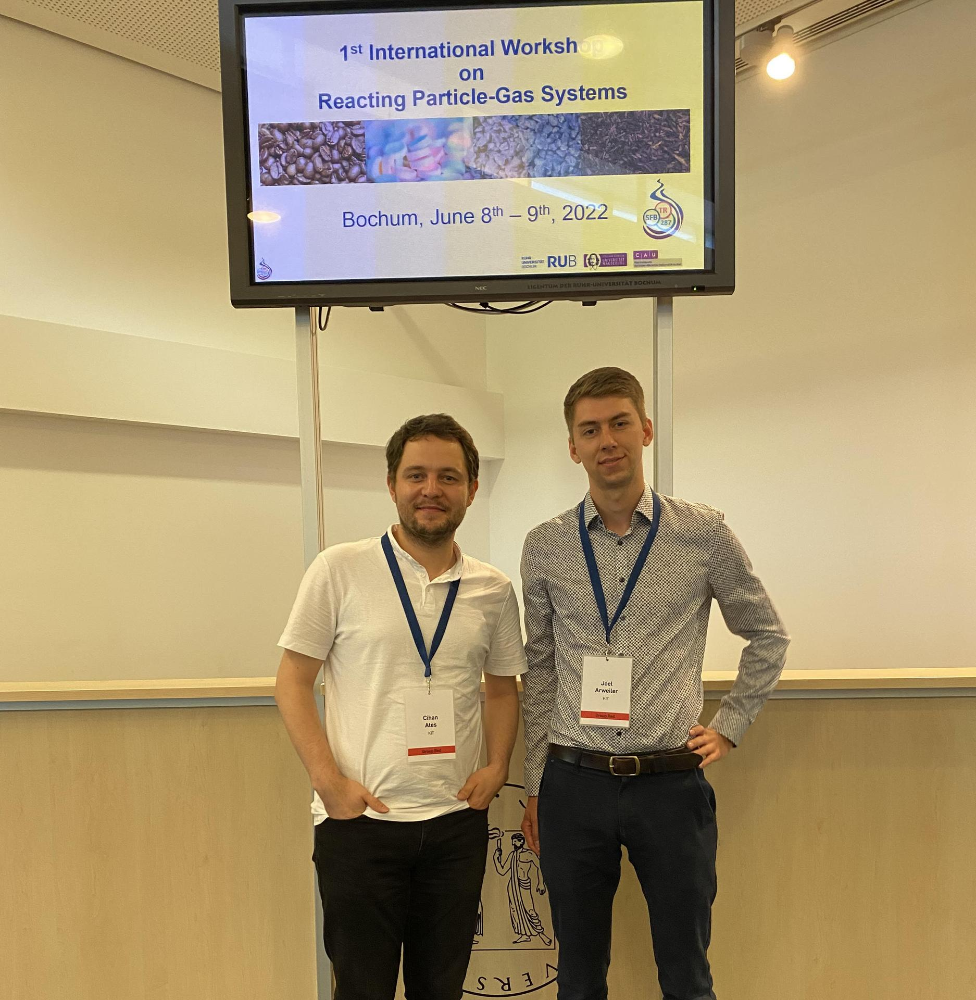
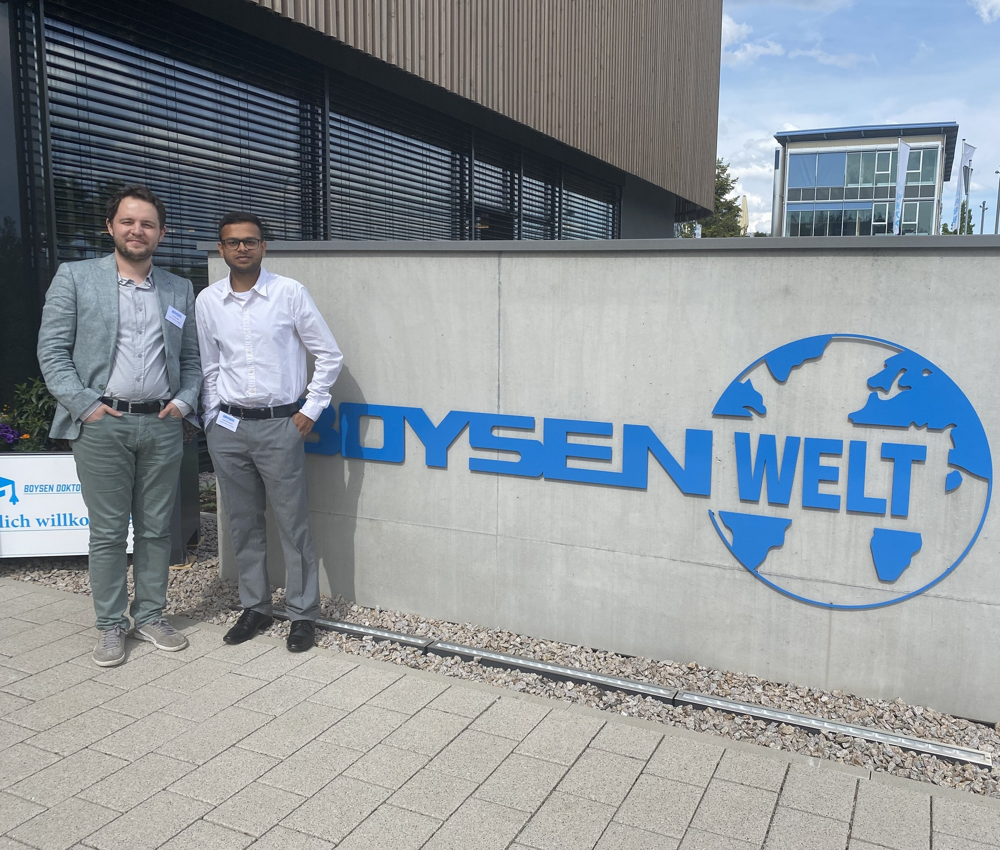

SPHERIC 2023

The 17th international SPHERIC workshop took place from 26 June to 30 June in Rhodes, Greece. Niklas Bürkle, Matthias Haber, Karthik Muthukumar and Markus Wicker presented their current research work on smoothed particle hydrodynamics (SPH) and other part...
Read More
New course: "Boosting the Modern Energy Landscape via Turbo Machines & Machine Learning"
The new lecture "Boosting the Modern Energy Landscape via Turbo Machines & Machine Learning" starts at ITS in WS2023/24. In this lecture, students will acquire knowledge in the field of radial machines as well as an introduction to selected methods of art...
Read More
COMSOL Conference 2023
Dr Cihan Ates and Abdallah Alshanawani presented their work "Towards Data-Driven Design of Flow Blurring Atomizer" at the COMSOL 2023 conference in Munich. Their presentation explores the synergy between machine learning, experimentation and CFD and how t...
Read More
Boysen Days 2023
Dr Cihan Ates and M.Sc. Karthik Vigneshwaran Muthukumar presented their latest results from a joint project with the KIT ITCP. The project is called "Designing Gas-Liquid Contact Reactors for Efficient CO2 Capture".Gas-liquid contact reactors (GLCs) are o...
Read More
Helmholtz AI Conference 2023
From 12-14 June 2023, the Helmholtz AI Conference 2023 took place at the Deutsches Elektronen-Synchrotron (DESY) in Hamburg. Dr. Cihan Ates and Joel Arweiler presented their research results on the topic "Similarity-Based Framework for Unsupervised Domain...
Read More
MAI was at MCS 2023
From 22 to 26 January, the 12th Mediterranean Combustion Symposium took place in Luxor, Egypt. Dr.-Ing. Cihan Ates attended the event and presented the ongoing study on modelling of droplet trajectories in spray combustion via generative ML. The extended ...
Read More
Mobility @ IIIA - Barcelona
Dr. Ates has returned from his short term mobility at the Learning Systems Group of Prof. Jesus Cerquides. The research of this group focuses on the development of machine learning algorithms, models, software, and applications. From an algorithmic/model...
Read More
DDE Contest

In the last Data Driven Engineering Lecture, we have distributed ğŸ±ğŸ± ğ—¶ğ—»ğ—±ğ—¶ğ˜ƒğ—¶ğ—±ğ˜‚ğ—®ğ—¹ ğ˜€ğ˜ğ˜‚ğ—±ğ—²ğ—»ğ˜ ğ—½ğ—¿ğ—¼ğ—·ğ—²ğ—°ğ˜ğ˜€ and among the submissions, we picked the ğ—§ğ—¼ğ—½ 🱠ğ—®ğ˜€ ğ˜ğ—µğ—² ğ—³ğ—¶ğ—»ğ—®ğ—¹ğ—¶ğ˜€ğ˜ğ˜€ of the DDE-(KI)2T Contest. On ğŸ®ğŸ´ğ˜ğ—µ ğ—¼ğ—³ ğ—¢ğ—°ğ˜...
Read More
Project Hermit

Growing population, expanding global economy, urbanization with rising standard of living have dangerously accelerated waste generation in the world. It is expected to reach over 3.4 billion tons of waste per year by 2050, roughly a 70% increase. One suc...
Read More
Reacting Particle-Gas Systems 2022
The 1st International Workshop on Reacting Particle-Gas Systems took place from 07 to 09 June at the Ruhr-Universität Bochum. The event is organised by the Collaborative Research Centre 287 BULK-REACTION. Dr.-Ing. Cihan Ates and Mr. Joel Arweiler particip...
Read More
Boysen Days 2022
After a two-year break from Corona, the Doctoral Students' Days were brought back to life by the Boysen Foundation. We presented our latest results from a joint project with the KIT ITCP. The project is called "Designing Gas-Liquid Contact Reactors for Ef...
Read More

AI Hub @ Karlsruhe

Dr. Cihan Ates (ITS) and Dr. Edouard Fouché (IPD) organized the first AI-oriented international networking event at KIT on 5-7 October. Three keynote speakers, 16 young researchers, and six startups shared the latest developments in their fields and their...
Read More
Spheric 2022

After a 3-year break from Corona, we were at SPHERIC 2022 in Catania, Italy, which was held for the first time again. SPHERIC is a three-day workshop dealing exclusively with the Lagrangian Smoothed Particle Hydrodynamics (SPH) method. At our institute, w...
Read More